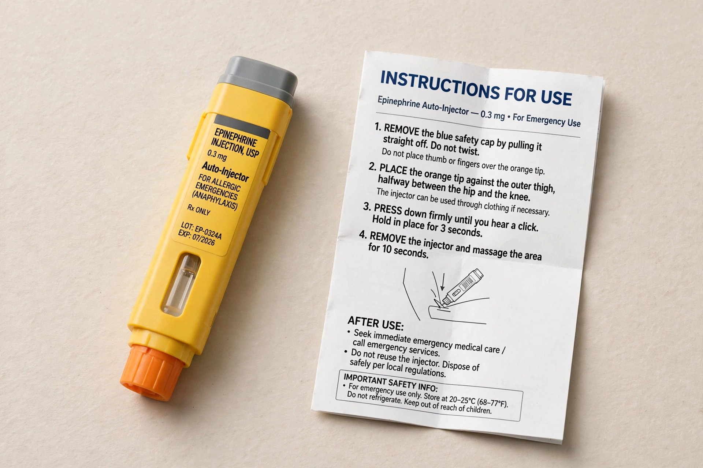

[Image placeholder: An adrenaline auto-injector, the first-line treatment for anaphylaxis]**Anaphylaxis** is a serious, rapidly developing allergic reaction that is potentially life-threatening. It typically involves more than one body system — skin and mucous membranes, airways, breathing, circulation and gut — and can cause airway obstruction and a dangerous fall in blood pressure (anaphylactic shock).
Common triggers include foods (peanuts, tree nuts, shellfish, milk, egg), insect stings, and medicines such as penicillin antibiotics. The first-line treatment is prompt intramuscular adrenaline (epinephrine), usually given with an auto-injector such as an EpiPen; antihistamines and steroids are adjuncts only and must never delay adrenaline.
In most cases an allergen cross-links IgE antibodies on mast cells and basophils, releasing histamine and other mediators that widen blood vessels, leak fluid into tissues and constrict airways. Symptoms usually begin within minutes: flushing, hives, swelling of lips and tongue, wheeze, vomiting and collapse.
Guidelines emphasise immediate adrenaline into the thigh muscle, calling emergency services, and lying the patient flat with legs raised (or sitting up if breathing is difficult). Patients at risk carry two auto-injectors and an action plan; observation for several hours is advised because biphasic reactions can occur.